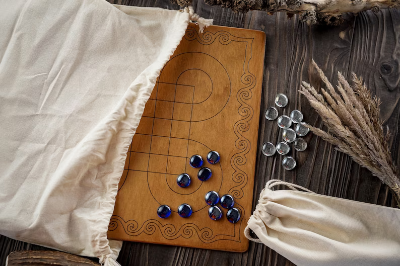

download Surakarta java edition today
Surakarta is a little-known Indonesian strategy board game for two players, named after the ancient city of Surakarta in central Java. The game features an unusual method of capture which is "possibly unique" and "not known to exist in any other recorded board game
